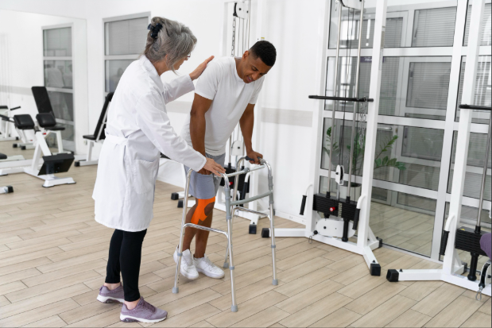

What is Rehabilitation Therapy?
Rehabilitation therapy is a specialized form of treatment aimed at helping individuals recover and regain their physical, mental, and emotional well-being after experiencing illness, injury, or surgery. The primary goal of rehabilitation therapy is to restore function, improve quality of life, and promote independence. Rehabilitation therapy can encompass a variety of approaches and techniques, including physical therapy, occupational therapy, speech therapy, and psychological counseling. The specific type of rehabilitation therapy used will depend on the individual's needs and the nature of their condition. Rehabilitation therapy is often provided by a team of healthcare professionals, including physiotherapists, occupational therapists, speech therapists, and psychologists, who work together to create a personalized treatment plan for each patient.
